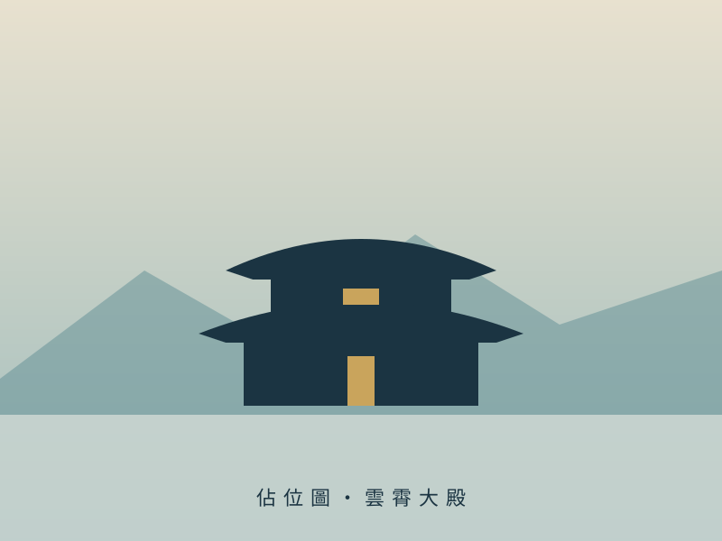

煉氣
引天地靈氣入體，洗經伐髓，踏出凡人與修士的第一步。


雲霄仙宗坐落於東域青嵐山脈之巔，傳承逾萬年，為東域正道之首。宗內靈脈縱橫、洞天林立，歷代弟子中不乏飛升上界的大能。
本宗以「劍、丹、陣」三道立宗，弟子入門後可依自身靈根擇道而修，由長老親自引領，循序漸進，穩固道基。
閱讀宗門傳承修行無捷徑，每一重境界都是一次脫胎換骨。
引天地靈氣入體，洗經伐髓，踏出凡人與修士的第一步。
以靈氣鑄就道基，壽元倍增，可御器飛行。
靈力凝聚成丹，丹成則一方可稱真人。
碎丹成嬰，元神可離體遨遊，肉身雖毀亦能重生。
神識通達天地法則，已窺飛升門徑。
功法、福地、名師，修行三要，本宗皆備。
藏經閣收錄自開山祖師以來的上古功法玉簡，依弟子資質傳授，不藏私、不斷代。
九峰坐落於上品靈脈之上，各峰設有洞府與靈泉，修行事半功倍。
劍、丹、陣三脈長老親自坐鎮，定期開壇講道，為弟子解惑指路。